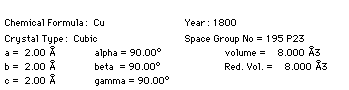

Distributed By: Virtual Labs
Set Search Chemistry Dialog Box
PATH...{Diffraction Object}:Search/Match Menu:Set Search Chemistry
PATH...{Diffraction Object}:Search/Match Menu:Search by d-space<Set Chemistry>
The Set Search Chemistry Dialog box, accessed under the .i.Search/Match:Set
Search Chemistry; menu, displays a Periodic
Table Dialog Box and two radio button selections. Initially, a number
of elements may be highlighted. These highlighted elements correspond to
the elements which may be or must be present in the crystal chemistry. To
change the default chemistry selection criteria, click on the desired criteria
and then either click on the desired element or click and move the mouse
over the desired element. Elements which are selected for one criteria are
automatically removed from the other criteria. Re-selection will cause the
element to be de-selected from consideration.
Search / Match Dialog Box
PATH...{Diffraction Object}:Search/Match Menu:Search by d-space
.
Search / Match Dialog Box
The Dialog boxes for Search by d-space, Search by g-Vector;
and Search by Volume; are essentially the same. The difference is
that if the Search by g-vector menu item is used to bring up the search
dialog box, the default values are for g-vectors; if the Search by Volume,
then the default setting is for a search by crystal volume. Therefore, all
three search types will be discussed in this section.
The Search Dialog Box is very complex and contains a number of different
functions.
It displays :
- a list of the experimental d-spaces which are used during the search,
- a list of the stored crystal d-space values and
- an abbreviated plot of both the experimental and data base crystal
d-space values.
This dialog also serves to access and display both shorthand and longhand
descriptions of any crystals found. Some simple editing of the database
crystal is supplied. It is possible to Delete individual crystals from the
crystal list, to delete duplicates using the Doubles button and to save
only Search Dialog Box:Selected Crystals; when closing the dialog box. Because
of its complexity, the following is a step by step break down of each element
of the dialog box. It starts in the upper left and moves to the bottom right.
- Use to enter experimental d-spacings into
the Experiment list.
Note: The Experimental d-space list must be clicked on
to activate this box.
- The Search Dialog Box:Search Chemistry; button brings up the
previously described Chemistry Periodic
Table. This button eliminates the need to close the dialog box to set
chemistry.
- The Search by d-space pop-up menu sets both the type of search which
will be conducted by Desktop Microscopist and how the results of that search
will be displayed. There are six different possible selections:
- Search by d-space. This is the most common search. The databases are
searched on the basis of planar d-space values. Experimental d-space values
are compared with stored crystal d-space values. The window for matching
a d-space is fairly wide . Values in the the Experimental List are given
as d-space values, the scale is Å.
Note: If no values are entered into the d-space list, the
search will be based solely on the selected chemistry. This is not an option
when search by volume has been selected
- Search by g-vector. The database search is based on distances
between points of maximum intensity as measured from the diffraction pattern.
The distances are entered as measured (mm) and they are converted to Å-1
using the specified camera constant. Values in the Experimental List and
the Matched Crystal list are given as measured distances.
- Search by 2 Theta. The database is searched by 2-theta value.
Where theta is the Bragg diffraction angle, theta is calculated for found
crystals using the indicated wavelength value. The initial wavelength value
corresponds to the value for the current window's acceleration voltage.
- The final three menu items, Volume Search/d-space, Volume Search/g-vector,
and Volume Search/2 Theta, search the database using the experimentally
determined reduced volume as the selection criteria. However, the experimental
values and the crystal values are displayed as one of the three options
dependent on the active menu item.
- The Total Matched static text item provides a running total
of the crystals which have matched the search criteria. The maximum number
of crystals which Desktop Microscopist will display is 150. Therefore, if
the total matched is greater than 150, the selection criteria needs to be
narrowed.
Matched Crystal Info
- The above portion of the dialog gives a list of experimental d-spacings,
the stored hkl values, intensity values and plane spacing values (d-space,
g-vector, 2q). The Electron Diffraction Database seldom stores the hkl and
intensity values. When that is the case the hkl values should default to
100 and the intensity values to 0.
- The Min. .FOM ; text box is used to set the Minimum Figure of Merit.
The Figure of Merit is a weighted function dependent on the number of plane
values matched and the relative ranking of the matched plane. If no experimental
d-space values are input, the FOM has no effect on the search. In general
the higher the FOM the fewer the matches.
- When searching dependent on crystal volume, the Min. FOM text box
is converted to the Exp. Vol. text box. In this case, the reduced
cell or cell volume in Å3 which will be used for the database search
needs to be input into this text box. When searching by volume, the crystal
volume in this box is always used as the criteria. Desktop Microscopist
will return any crystal meeting the set chemistry and whose volume or reduced
volume is within 15% of the search value. There is no method for controlling
the range of volume values.
- The Save Selected Crystals; check box is used when leaving the Search/Match
Dialog box to determine how to list the found crystals. When the check box
is selected then all crystals listed in the pop-up menu crystal list which
have a mark will be added to the Search/Match Menu, all other crystals will
be eliminated. If the check box is not activated then all crystals in the
pop-up menu crystal list will be added to the Search/Match menu.
- Use the Search Location Popup menu to set the Database to be searched
by the program.
- Use the Search Path;s function.
to help Desktop find the appropriate database.
- The Wavelength textbox sets the wavelength used to calculate
the 2-theta values for the stored crystals. Its initial value corresponds
to the current window's active beam's wavelength.
- The Camera Const.; (mm-Å) textbox sets the camera constant
which is used to calculate the g-vector values for the stored crystal. Its
initial value corresponds to the current window's active beam's Camera Constant.
- The pop-up menu is the crystal pop-up menu
and provides a quick evaluation of the located crystals. The first value
gives the calculated Figure of Merit. The second is the reduced volume of
the crystal in Å3. The third and fourth values correspond to the space
group number and the space group symbol. The fifth and final value is the
crystal's empirical formula.
- Clicking on the Delete button will delete the selected crystal.
- Clicking on the Doubles button will delete all the duplicate
crystals in the crystal list. Crystals are considered duplicate if they
have the same chemistry, same space group, and same crystal volume. The
crystals are eliminated based on publication date. Therefore, when two crystals
are considered duplicate, the crystal with the most recent discovery date
is kept.
- Clicking on the Search button activates the search algorithms.
This process may be interrupted by pressing <cmd-period>. It is complete
when the watch cursor changes back to the standard arrow cursor.

A display of pertinent crystal data.
- The FOM textbox lists the Figure of Merit for the current crystal.
- The Ref. button brings up the Standard
Reference Dialog box which has been described previously under the crystal
definition dialog box. It contains the reference data for the displayed
crystal.
- The Experiment / Database display at the bottom of the dialog
is a graphical display of the database crystal d-space values compared with
the experimental d-space values. The experimental values appear above the
dividing line and database values below. The higher d-space values are plotted
towards the left of the line. Essentially, it is a g-vector display with
the left end of the dividing lines as the origin.
Author: J.ames T.
Stanley
 Desktop
Manual:Dialog Boxes
Desktop
Manual:Dialog Boxes
Distributed By: Virtual Labs
Last Updated:1/12/96 Sat, Apr 27, 1996